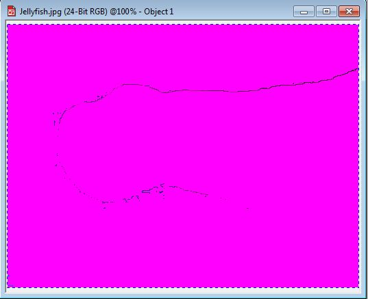
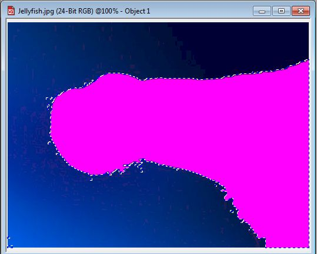
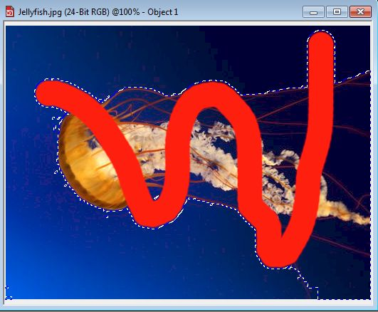
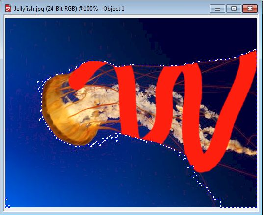

Функция Lock Transparency (Блокировать прозрачность) в Photo-Paint
В данном уроке речь пойдет об опции Lock Transparency (Блокировать прозрачность), которая находится в докере Objects (Объекты). В Справке Photo-Paint, мы можем узнать, что эта функция позволяет защитить область вокруг объекта от нежелательных изменений. На первый взгляд, вроди бы все понятно, но в то же время никакой конкретики Справка нам не дает.
Рассмотрим эту возможность на примере, который немного прольет свет на то, что же нам предоставляет эта опция. Но сначала вспомним, что вокруг объекта появляется «ограничивающая рамка» в виде пунктирной линии, которая определяет границы объекта. Области внутри этой рамки, как правило являются непрозрачными, а за пределами – прозрачными.
Что это означает на практике? Это значит, что если вы, к примеру, примените заливку, то будет залито все изображение, независимо от того, какие области считаются прозрачными, а какие нет. Давайте посмотрим, как это все выглядит… На рис. 1 показано исходное изображение.
С помощью инструмента Magic Wand Mask (Маска волшебной палочкой) выделим медузу. Я сделал это весьма приблизительно, т. к. в данном уроке точность вовсе не нужна. Затем создадим объект из маски (рис. 2).
На рисунке видно, что в данный момент выделен полученный объект и видна «ограничивающая рамка». Выберите инструмент Fill (Заливка), щелкните внутри «ограничивающей рамки», а потом за ее пределами. Получим залитое изображение (рис. 3).

На рисунке видны лишь очертания объекта.
Повторим те же действия, но нажав сначала кнопку Lock Transparency (Блокировать прозрачность) в докере Objects (Объекты). Результат показан на рис. 4.

Аналогичная ситуация будет при использовании инструмента Paint (Кисть). Проделаем те же действия, что и предыдущем случае и сравним результаты (рис. 5 и 6).


На рис. 6 видно, что при включении опции Lock Transparency (Блокировать прозрачность) мазок кисти не выходит за пределы объекта, что обычно и требуется в большинстве ситуаций.
Из выше сказанного вытекает, что для защиты от нежелательных изменений, областей вокруг объекта и предназначена эта опция. Это очень удобно, когда вам нужно закрасить часть объекта, но при этом не выйти за его пределы.
Как вам это удалось, даже не представляю...
Распишите ваши действия, пожалуйста, поподробнее, мне не удается выделить медузу при помощи Magic Wand Mask...
Ну как же??...
1. Выбираем инструмент Magic Wand Mask.
2. Параметр Tolerance (Допуск) устанавливаем равным примерно 5-7.
3. Переключаемся на Панели свойств в режим Additive mode (Аддитивный режим). Щелкаем в нескольких местах, т. к. фон не совсем однородный и одним щелчком инструментом на фоне не обойтись.
4. И в конце жмем кнопку Invert Mask.
Надо отметить, что инструментом Magic Wand Mask Вы не выделите медузу, если попытаетесь выделить только ее, включая тонкие щупальцы. В примере этого не требовалось. Для такого рода выделений (тонких частей) используется совсем другая методика.
Спасибо, урок получился.
P.S.
Для выделения медузы мне также пригодилась команда Mask->Mask Outline->Remove Holes.